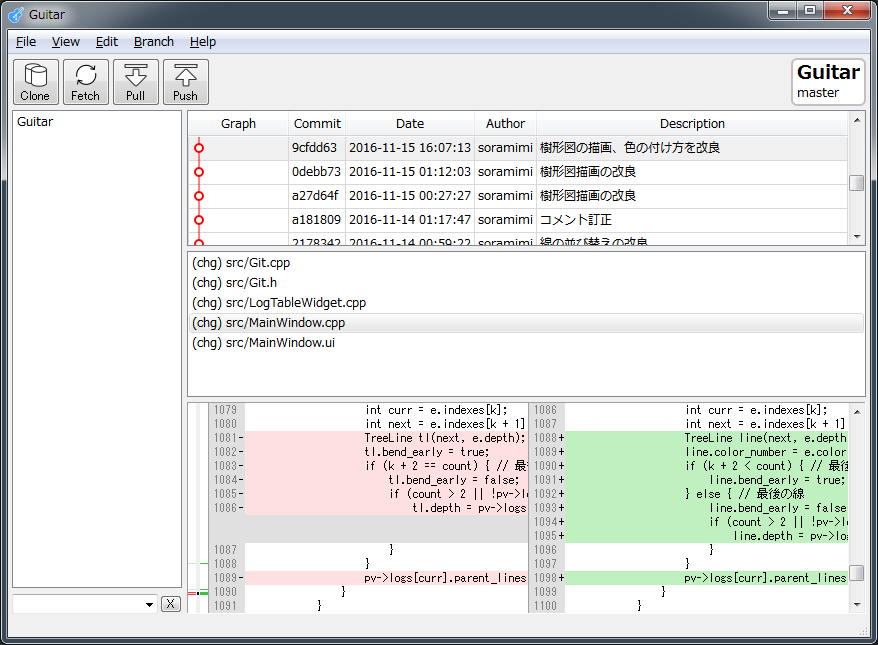
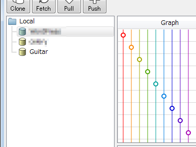
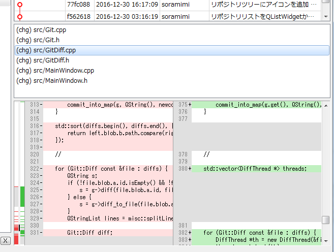

under development
Windows、macOS、Linuxで動作する、バージョン管理ツール Git のクライアントアプリケーションです。
特徴
- C++で開発。GUIフレームワークはQt 5を採用。
- 無料、オープンソース、フリーソフト。（GPLv2）
- ダウンロードする際に、メールアドレスなどの個人情報を登録する必要はありません。
- 某アプリほど、起動に時間がかかりません。
- 某アプリほど、アイコンが気持ち悪くありません。
- 元は、作者（私）がGitを習得することを目的に作り始めたプログラムなので、Gitの奥深い機能までサポートしてはいません。
- 追加してほしい機能があったら、開発に参加して改良したり、アイディアを提案したりしましょう。（←協力者募集です。お願いします。）
スクリーンショット
|  |  |  |  |
| 全体像 | リポジトリリストとコミットグラフ | diffビュー | Raspberry Pi 版 |
{kind=link}
{kind=link}
{kind=link}
コンパイル済みバイナリ
v0.9 (2018-10-23)
下記OS用のバイナリを用意しました。Windows版とmacOS版はQtライブラリを同梱していますが、Linux版では apt-get でQt5関連ファイルをインストールする必要があるかもしれません。これら以外のLinux等を使用する場合は、ソースから自前ビルドする必要があります。
- Windows
- macOS
- Ubuntu16～18 x86
- Ubuntu16～18 x64
- Raspbian stretch
ビルド方法
開発
最初の起動
Guitarを起動すると、初回だけgitコマンドとfileコマンド（Windowsの場合は、git.exeとfile.exe）の場所を尋ねられます。PATHが通っている場合は、候補が表示されますので、適切なものを選択してOKを押してください。候補が無い場合はインストールする必要があります。
Windows
- msvcp120.dll
- msvcr120.dll
Guitar.exe を起動したとき、「msvcp120.dll , msvcr120.dll が見つからない」等のエラーが表示された場合、 Visual Studio 2013 の Visual C++ 再頒布可能パッケージ の32ビット版（vcredist_x86.exe）をインストールする必要があります。
- git.exe
Git for Windows をインストールします。
- file.exe
Guitar\misc\win32tools.zip の中に入っていますので、展開してそれを選択します。
macOS / Linux
macOSやLinuxのディストリビューションによっては既にインストール済みかもしれません。無い場合はOSごとの方法で git をインストールします。Ubuntuの場合、下記のコマンドを実行します。
$ sudo apt-get install git
既知の問題
- ファイルリストでバイナリファイルを選択した場合、対応済みの一部の画像ファイルを除き、diffビューが乱れた表示になることがあります。